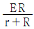
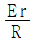
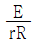
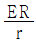
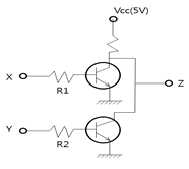
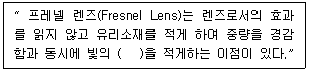
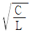
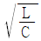
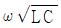
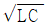

항로표지기사 (2010-07-25 기출문제)
1과목: 항로표지일반
1. 방위와 침로에 대한 설명으로 틀린 것은?
- 자기자오선과 자극을 지나는 진자오선이 관측자의 위치에서 이루는 교각을 편차라고 한다.
- 선내에 설치된 마그네틱 컴퍼스의 남북선이 자기자오선과 일치하지 않고 이루는 교각을 자차라고 한다.
- 관측자를 지나는 진자오선과 관측자 및 목표물을 지나는 대권이 이루는 각을 진방위라고 한다.
- 자기자오선과 선수미선이 이루는 각을 나침로라고 한다.
(정답률: 알수없음)

2. 항로표지위탁관리업자가 그 업무를 개시∙휴지 또는 폐지하고자 하는 때에는 누구에게 그 사실을 미리 신고하여야 하는가?
- 시∙도지사
- 해양수산부장관
- 해양경찰청장
- 항로표지기술협회장
(정답률: 알수없음)
3. IALA 해상부표식의 방위표지에 대한 설명으로틀린 것은?
- 굴곡점, 합류점, 분기점 등 항로 내의 특이한 지점에 대하여 주의를 환기시키고자 하는 경우에 설치한다,
- 북방위 표지는 표지의 북쪽에 그 구역의 최심부가 있거나 가항수역 또는 항로가 있음을 의미한다.
- 장해물을 중심으로 하여 진방위로 북에서 동까지의 상한을 동상한이라고 한다.
- 서상한에 설치된 방위 표지를 서방위 표지라고 한다.
(정답률: 알수없음)
4. 광파표지에 대한 항해자의 요망사항이 아닌 것 은?
- 절대적인 신뢰성
- 적절한 광달거리 (특히 제한된 시계 상황에서)
- 파랑에 의하여 심한 동요가 있을 경우라도 분명한 등질 확인
- 식별하기는 어렵지만 뚜렷한 점멸등질
(정답률: 알수없음)
5. IALA 해상부표식에 적용되는 항로표지는?
- 등대
- 도표
- 대형부표
- 등표
(정답률: 알수없음)
6. 해양자료수집시스템(ODAS)용 등부표의 등질로 할 것을 권고한 등질은?
- 군섬황광 매20초에 5섬
- 군섬황광 매10초에 5섬
- 군섬황광 매20초에 3섬
- 군섬황광 매10초에 3섬
(정답률: 알수없음)
7. 좁은 해협, 수로 등에서 선박의 교통량, 항법상의 각종 자료 및 조류의 방향 등을 주야간에 전파 또는 형상물로서 항행선박에 통보하는 항로표지는?
- 특수신호표지
- 광파표지
- 음파표지
- 전파표지
(정답률: 알수없음)
8. 선박의 위치를 구하는데 이용되는 위치선이 아닌 것은?
- 물표의 방위를 관측하여 얻은 방위선
- 일직선상에 겹쳐 보이는 두 물표를 연결하는 중시선
- 수평 거리에 의한 위치선
- 동시 관측에 의한 위치선
(정답률: 알수없음)
9. AIWR은 어떤 등질의 약기호인가?
- 복합군명암광
- 군섬광
- 호광
- 단명암광
(정답률: 알수없음)
10. 다음 중 랜비(LANBY)의 성능 기준이 아닌 것은?
- 부체의 안정성이 양호하여야 한다.
- 신호 등화는 짧은 가시거리를 가져야 한다.
- 음향신호는 보통 위험물 경고용만으로 필요하다.
- 고장 시에는 즉시 항해자들에게 통보하여야 한다.
(정답률: 알수없음)
11. 지축과 직교하는 대권을 무엇이라 하는가?
- 대권(Great Circle)
- 적도(Equator)
- 거등권(Parallel of Latitude)
- 본초자오선(Prime Meridian)
(정답률: 알수없음)
12. IALA에서 권고하고 있는 항로표지 역반사재 사용 권고의 대상표지에 관한 설명이 잘못된 것은?
- 측방위표지 - 수로의 좌∙우현 표지
- 방위표지 - 동서남북의 가항수역을 표시
- 고립장애표지 - 침선,공사 등 신위험물표시
- 안전수역표지 - 수로중앙 표시와 같이 전 주변 수역이 가항수역임을 표시
(정답률: 80%)
13. 등대의 등고에 대한 설명으로 옳은 것은?
- 기본 수준면에서 등록의 상부 끝까지 높이
- 평균 수면에서 등화의 끝까지 높이
- 평균 수면에서 등화의 중심까지의 높이
- 약최고고조면에서 등화의 끝까지 높이
(정답률: 90%)
14. 특수신호표지와 관련이 있는 것은?
- 등대 또는 등표와 같은 광파표지
- 입표나 도표와 같은 형상표지
- 전기혼이나 에어사이렌과 같은 음파표지
- 항행선박에 항법상의 자료를 통보하는 선박통항신호표지(VTS)
(정답률: 91%)
15. 점광원에서 어떤 방향의 입체각에 나오는 광속을 그 입체각으로 나눈 값은?
- 휘도
- 광도
- 조도
- 광속도
(정답률: 알수없음)
16. 극심한 조류, 파도 등 해상조건과 기상조건의 영향을 크게 받지 않는 해역은?
- 외해
- 준외해
- 내해
- 급류해역
(정답률: 알수없음)
17. 항법의 종류가 아닌 것은?
- 천문항법
- 전파항법
- 추측항법
- 임의항법
(정답률: 93%)
18. 등명암광, 명암광, 장섬광 매10초 1섬광 또는 모르스 부호광(A) 등질을 사용하는 항로표지는?
- 특수표지
- 안전수역표지
- 고립장해표지
- 방위표지
(정답률: 90%)
19. 항로표지법에서 정하고 있는 항로표지의 종류 중 형상표지가 아닌 것은?
- 등대
- 입표
- 도표
- 부표
(정답률: 알수없음)
20. 해협, 수도, 소해수로, 준설항로, 항만 등 협소하거나 위험한 해역을 항해하는 선박을 안전하게 목적지로 인도하기 위하여 설치하는 항로표지는?
- 연안표지
- 항만인지표지
- 유도표지
- 장애표지
(정답률: 60%)
2과목: 전기·전자기초
21. 다음 중 배율기 저항의 주사용 목적은?
- 용량계의 측정 범위 확대
- 저항계의 측정 범위 확대
- 전압계의 측정 범위 확대
- 검류계의 측정 범위 확대
(정답률: 알수없음)
22. 반도체 다이오드에서 PN접합 근처의 영역으로 양이온과 음이온으로 구성된 영역은?
- 중성영역
- 재결합영역
- 공핍영역
- 확산영역
(정답률: 알수없음)
23. 기전력 E[v], 내부저항 r[Ω]인 전지를 저항 R[Ω]에 연결할 때, 저항 R의 양단에 나타나는 전압[V]는?




(정답률: 30%)
24. 정전용량이 같은 콘덴서 2개를 병렬로 연결하였을 때, 합성 정전용량은 이들 2개를 직렬로 연결했을 때의 몇 배인가?
- 2
- 4
- 6
- 8
(정답률: 알수없음)
25. e=141sin{120πt-(π/3)}인 파형의 주파수[Hz]는?
- 15
- 30
- 60
- 120
(정답률: 알수없음)
26. 다음 중 축전이의 충전방식이 아닌 것은?
- 급속충전
- 부동충전
- 균등충전
- 과충전
(정답률: 알수없음)
27. 브리지 정류기에서 입력전압의 정(+)의 반주기 동안 다이오드의 상태는?
- 1개의 다이오드만 순방향 바이어스가 된다.
- 2개의 다이오드만 순방향 바이어스가 된다.
- 3개의 다이오드만 순방향 바이어스가 된다.
- 모든 다이오드가 역방향 바이어스가 된다.
(정답률: 알수없음)
28. 다음 정류회로 중에서 대전력용으로 가장 적합한 것은?
- 단상반파 정류회로
- 단상 브리지 정류 회로
- 3상 반파 정류 회로
- 3상 전파 정류 회로
(정답률: 알수없음)
29. 다음 중 태양전지를 구성하는 반도체와 가장 유사한 형태를 지니고 있는 소자는?
- 다이오드
- 트랜지스터
- SCR
- FET
(정답률: 70%)
30. 기동토크가 크게 요구되는 부하에 가장 적합한 직류 전동기는?
- 복권 전동기
- 직권 전동기
- 타여자 전동기
- 영구자석 전동기
(정답률: 55%)
31. 교류 동기 발전의 병렬 운전시 요구되는 조건과 거리가 먼 것은?
- 전압이 같아야 한다.
- 주파수가 같아야 한다.
- 임피던스가 같아야 한다.
- 위상이 같아야 한다.
(정답률: 알수없음)
32. UPS시스템의 기본 구성 요소가 아닌 것은?
- 정류기
- 변류기
- 축전지
- 인버터
(정답률: 알수없음)
33. 서로 결합된 두 개의 코일을 직렬로 연결하면 합성 인덕턴스는 20[mH]가 되고, 한쪽 코일을 반대 방향으로 연결하면 합성 인덕턴스는 12[mH]가 된다고 한다. 두 코일간의 상호 인덕턴스[mH]는?
- 1
- 2
- 4
- 5
(정답률: 알수없음)
34. 태양전지에서 빛을 기전력으로 바꾸는 역할은?
- 발열 작용
- 광기전력 효과
- 압전 현상
- 열전현상
(정답률: 알수없음)
35. 도체에 전류가 흐를 때 자장의 방향을 쉽게 알 수 있는 법칙은?
- 렌츠의 법칙
- 비오사바르 법칙
- 전자유도 법칙
- 앙페르 오른 나사의 법칙
(정답률: 알수없음)
36. 실효값이 100[V]인 교류 전압을 전파정류시 평균값[V]는 약 얼마인가?
- 141
- 120
- 112
- 90
(정답률: 알수없음)
37. 정논리의 경우 X, Y는 입력이고 Z를 출력이라 할 때, 그림의 논리회로는?

- AND회로
- OR 회로
- NAND회로
- NOR 회로
(정답률: 알수없음)
38. 다음 중 평형 3상 Y결선에서 선간전압과 상전압의 위상차는?
- π/2
- π/3
- π/4
- π/6
(정답률: 알수없음)
39. 3[Ω], 6[Ω], 8[Ω]의 저항을 병렬로 접속하면 합성저항[Ω]은?
- 16
- 8
- 4.4
- 1.6
(정답률: 알수없음)
40. 가동코일형 계기의 특징과 거리가 먼 것은?
- 플레밍의 왼손법칙을 따른다.
- 지침의 회전각은 계기에 흐르는 전류에 비례한다.
- 눈금은 일반적으로 균등하다.
- 교류전용으로 사용된다.
(정답률: 알수없음)
3과목: 광파·음파표지
41. 통하이 곤란한 좁은 수로, 만입구, 항구 등에서 선박에 안전한 진로를 알려주기 위해서 진로의 연장선의 육지에 설치된 항로표지는?
- 등부표
- 조사등
- 지향등
- 조명등
(정답률: 알수없음)
42. 일정한 광도의 빛이 일정한 간격으로 발하며 명간과 암간의 길이가 같은 등질은?
- 군명암광
- 등명암광
- 초급성광
- 단명암광
(정답률: 알수없음)
43. 다음 중 공기중에서 음압(Microbar)의 기준치는?
- 0.0001
- 0.0002
- 0.0003
- 0.0004
(정답률: 알수없음)
44. 다음 중 눈부심(Glare)이 생기게 하는 원인이 아닌 것은?
- 고휘도 광도 또는 반사물체가 있다.
- 눈이 낮은 휘도 수준(Level)에 순응하고 있다.
- 광원과 그 주위에 휘도 차가 대단히 크다.
- 눈에 들어오는 광원이 시각이 작다.
(정답률: 알수없음)
45. 다음 중 항로표지에 요구되는 색의 특성이 아닌 것은?
- 특별성
- 시인성
- 식별성
- 유목성
(정답률: 55%)
46. 다음 중 마스킹효과에 대한 설명으로 옳은 것은?
- 가청주파수의 맥동현상이다.
- 읍압의 온도에 따른 변화를 말한다.
- 어떤 소리가 다른 소리를 들을 수 있는 능력을 감소시키는 현상이다.
- 음향의 회절 및 굴절현상이다.
(정답률: 알수없음)
47. 국제항로표지협회(IALA)에서 권고한 등질의 약기가 틀린 것은?
- 부동광 – F
- 명암광 -Oc
- 모르스광 –Mo
- 호광 - Q
(정답률: 알수없음)
48. 다음 중 프레넬 렌즈에 대한 설명으로 ( )안에 적합한 것은?

- 회절손실
- 반사손실
- 굴절손실
- 투과손실
(정답률: 알수없음)
49. 광파표지 종류 중 암초, 수심이 얕은 곳에 설치된 등화를 갖춘 탑 모양의 구조물은?
- 등대
- 등표
- 도등
- 도표
(정답률: 40%)
50. 빛의 회절에 대한 설명으로 옳은 것은?
- 파장이 길수록, 틈의 폭이 넓을수록 크다.
- 파장이 길수록, 틈의 폭이 좁을수록 크다.
- 파장이 짧을수록, 틈의 폭이 넓을수록 크다.
- 파장이 짧을수록, 틈의 폭이 좁을수록 크다.
(정답률: 알수없음)
51. 광달거리에 대한 설명으로 틀린 것은?
- 광파표지가 등광에 의해 그 위치를 항해자에게 표시하는 거리이다.
- 빛의 산란, 흡수 또는 지구의 만곡 등의 이유 때문에 거리에 오차가 있을 수 있다.
- 광달거리는 지리학적, 광학적, 명목적 광달거리가 있다.
- 항해자가 등광을 인식할 수 있는 최소 거리를 뜻한다.
(정답률: 알수없음)
52. 광파표지 설계의 기본 요건이 아닌 것은?
- 광력이 크고 식별이 곤란한 착색광을 사용하지 않아야 한다.
- 광력의 크기보다는 등광의 착색 등에 의하여 다른 등화와 정확히 구별하는 것이 중요하다.
- 장해표지로서는 두 개의 표지 중 한개만 표과를 올리 수 있으면 된다.
- 광파표지이 대표적인 등대는 선박의 물표가 되는 위치를 선정하여 건설 한다.
(정답률: 70%)
53. 등부표를 설계할 때 고려해야 할 외력과 거리가 먼 것은?
- 풍압력
- 부력
- 파압력
- 대기압
(정답률: 알수없음)
54. 다음 중 광파표지의 종류가 옳은 것은?
- 등대, 등표, 부표, 지향등
- 도등, 지향등, 조사등, 등주
- 부표, 도표, 조사등, 등부표
- 데카, 등부표, 등주, 입표
(정답률: 알수없음)
55. 다음 중 등대의 높이가 100m, 항해자의 수면상 눈의 높이가 5m인 경우 지리학적 광달거리는 몇 해리 인가?
- 10.4
- 25.5
- 95
- 208.0
(정답률: 알수없음)
56. 다음 중 300~500Hz 저주파로서 음향을 발사하는 무신호기는?
- 에어사이렌
- 모터사이렌
- 다이야폰
- 전기폰
(정답률: 알수없음)
57. 등화의 점멸을 위한 방법으로 적합하지 않는 것은?
- 전력의 공급을 단속하여 광원자체를 점멸한다.
- 펜슬빔을 발하는 섬광렌즈를 수직방향으로 회전시켜 먼 거리에 있는 관측자에게 등화가 점멸하고 있는 것처럼 보이게 한다.
- 광원의 주위에서 개구가 있는 스크린을 수평방향으로 회전시켜 외부로 향하는 빛을 단속하여 점멸하고 있는 것같이 보이게 한다.
- 광원의 전면에서 셔터를 개폐하여 빛을 발하고 또는 차폐한다.
(정답률: 알수없음)
58. 교량 아래를 통항하는 선박의 안전항해와 교량 시설물의 보호를 위하여 안전한 항로 폭을 표시하는 항로표지시설로 교량등(야표)에 속하지 않는 것은?
- 좌측단등(L등)
- 우측단등(R등)
- 교각등(P등)
- 우측우선등(C등)
(정답률: 알수없음)
59. 지리학적 광달거리의 주요 요소가 아닌 것은?
- 지국의 곡률
- 대기굴절
- 표지등화 및 항해자(관측자)의 수면상의 눈의 높이
- 지구의 반경
(정답률: 알수없음)
60. 다음 중 에어사이렌에 대한 설명으로 틀린 것은?
- 압축공기에 의해서 사이렌을 취명시킨다.
- 유압에 의해서 피스톤과 실린더를 취명시킨다.
- 소리는 공기 압축기에서 발생한다.
- 무신호 종류 중 하나이다.
(정답률: 알수없음)
4과목: 전파표지 및 시스템이용
61. GPS는 스펙트럼 확산 방식을 채용하고 있는데, 그 특징이 아닌 것은?
- 잼(Jam)을 사용할 수 있다.
- 간섭을 방지할 수 있다.
- 정보의 외부 유출 확률이 높다.
- 고정도의 거리 및 시각 측정이 가능하다.
(정답률: 알수없음)
62. GPS 시스템 구성에서 위성의 궤도면과 위성 수는?
- 3궤도, 18개
- 3궤도, 24개
- 6궤도, 18개
- 6궤도, 24개
(정답률: 알수없음)
63. 마이크로파용 안테나의 특징으로 옳지 않은 것은?
- 지향성이 예민한 안테나를 만들기 쉽다.
- 개구면적이 클수록 이득이 크다.
- 개구면적이 같은 경우 파장이 길수록 이득이 크다.
- 장파용보다 안테나가 소형이다.
(정답률: 알수없음)
64. 조류신호소에서 이용되는 조류측정 센서의 형태가 아닌 것은?
- 젯트형
- 임펠러형
- 전자 유도형
- 도플러 소나형
(정답률: 알수없음)
65. 다음 중 쌍곡선 항법과 거리가 먼 것은?
- 로란
- 데카
- 레이더 비콘
- 오메가
(정답률: 80%)
66. 다음 중 조류신호의 유속, 유향 측정에 고려 되지 않는 것은?
- 측정 방법
- 설치 해역
- 측정시간의 길이
- 대기 온도
(정답률: 알수없음)
67. 레이콘에 사용되는 S-band 주파수[Mhz]로 적합한 것은?
- 2900-3100
- 3500-3900
- 5300-5500
- 9300-9500
(정답률: 알수없음)
68. 전파는 진행방향으로 전계와 자계가 서로 직교하고 있다. 특히, 전계의 진동면을 편파면이라 하는데 편파면의 성질에 다른 구분이 아닌 것은?
- 직선편파
- 구편파
- 원편파
- 타원편파
(정답률: 80%)
69. Loran-C에서 사용되는 지표파의 특징에 관한 설명으로 틀린 것은?
- 지표파는 지구표면을 따라 전파한다.
- 지표파는 주파수가 낮을수록 감쇠가 적다.
- 이용 주파수대는 MF, LF 등이 있다.
- 지표파의 전파속도는 해상과 육상에서 차이가 없다.
(정답률: 알수없음)
70. 위성항법 보정장치(DGPS)의 송신장치에서 사용되는 변조방식으로 맞는 것은?
- MSK 변조
- PCM 변조
- PSK 변조
- 타원편파
(정답률: 91%)
71. 다음 중 맥스웰 방정식에 의한 전파의 성질이 아닌 것은?
- 전파는 균일한 매질 내에서는 일정 속도로 직진한다.
- 전파는 진행 중 매질에 따라 주파수가 변한다.
- 전파는 서로 다른 매질의 경계면에서 일부가 반사되고, 투과한 전파는 굴절한다.
- 전파는 파원에서 멀어짐에 따라 진폭은 점차 감소된다.
(정답률: 90%)
72. 다음 중 DGPS의 주파수 및 신호형태로 적합한 것은?
- 90~110 kHz / 펄스파
- 90~110 MHz / 펄스파
- 283~325 kHz / 지속파
- 283~325 MHz / 지속파
(정답률: 알수없음)
73. 다음 중 GPS의 오차가 아닌 것은?
- 위성시계 오차
- 대류권 오차
- 전리층 오차
- 대기온도 오차
(정답률: 알수없음)
74. 다음 중 Loran-C 방식에 대한 설명으로 틀린 것은?
- 하나의 주국과 2~4개의 종국이 한 개의 체인을 형성한다.
- 검파된 펄스의 윤곽을 일치시켜 개략측정하고 반송파의 위상을 비교하여 정밀 측정하는 두가지 방법을 병행하여 사용한다.
- 지표파를 일차적으로 사용하고 D층 및 E층 1차 반사파는 윤곽의 정합에만 이용하여 개략의 위치를 내는 방식이다.
- 주간의 이용범위는 3000마일 정도이고 위치선의 오차는 5~10마일이며 야간공간파를 이용할 때는 이용 범위가 축소된다.
(정답률: 알수없음)
75. 로란-C 체인에서 종국이 주국의 신호를 수신한 순간부터 종국의 신호를 발사할 순간까지 약속된 대기시간은?
- CD(Coding Delay)
- ED(Emission Delay)
- GRI(Group Repetition Interval)
- BD(Baseline Delay)
(정답률: 알수없음)
76. 방위와 거리를 레이더 스크린에 표시하도록 설계된 트랜스폰더형 항로표지는?
- 레이콘
- GPS
- LORAN
- 레이텐(Ratan)
(정답률: 30%)
77. 송신 안테나의 분포정수회로에서 무손실선로의 특성 임피던스 Z0는?




(정답률: 알수없음)
78. 다음 중 전파표지설비로 원거리 위치측정에 가장 적합한 것은?
- LORAN-C
- RADIO BEACON
- RADAR BEACON
- RADAR-TRANSPONDER
(정답률: 72%)
79. 다음 중 선박통항신호소와 관련된 용어로 원어가 잘못 표기된 것은?(문제 오류로 가답안 발표시 4번으로 발표되었지만 확정답안 발표시 3, 4번이 정답처리 되었습니다. 여기서는 가답안인 4번을 누르시면 정답 처리 됩니다.)
- VTS(Vessel Traffic Service)
- ARPA(Automatic Radar Plotting Aids)
- ECDIS(Electronic chart Display System)
- AIS(Automatic Information System)
(정답률: 알수없음)
80. 다음 중 공전(Atmospheric)에 따른 잡음방해 개선책이 아닌 것은?
- 안테나에 Notch Filter를 설치한다.
- 수신기의 실효 대역폭을 넓게 한다.
- 송신전력을 크게 한다.
- 안테나의 지향성을 예민하게 한다.
(정답률: 알수없음)
나침로는 선수미선과 북극성을 이루는 선 사이의 각도를 말합니다. 자기자오선은 지자기력의 방향을 나타내는 선이며, 선수미선은 선박이나 비행기의 이동 방향을 나타내는 선입니다. 따라서 자기자오선과 선수미선이 이루는 각은 나침로와는 다른 개념입니다.